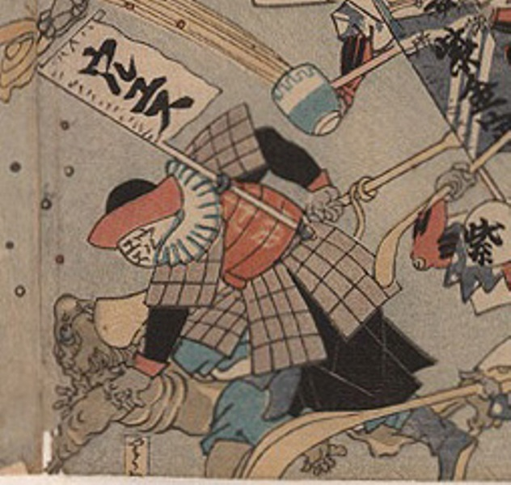

病気；ビョウキ，疫神；エキシン，ウルユス；ウルユス

ウルユスという薬が擬人化した化物。病気を組み臥している。病気は鬼のような姿をし、肌色は暗く、青い腰巻をつけている。
著作者：歌川芳虎／出典：親書誌：U426_nichibunken_0012：諸病諸薬の戦い；ショビョウショヤクノタタカイ／日付：2006／資源識別子：U426_nichibunken_0012_0001_0000
Copyright (c)2010- International Research Center for Japanese Studies, Kyoto, Japan. All rights reserved.